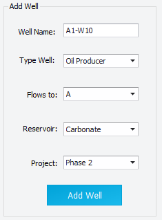
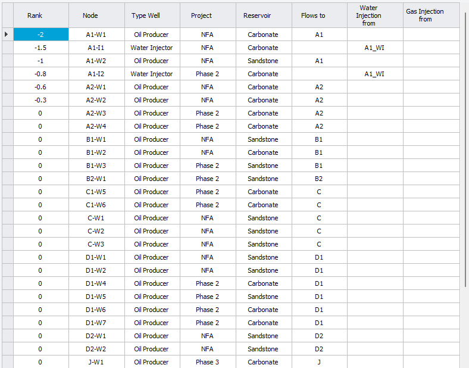
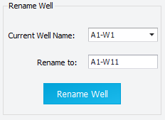

|
Add wells to the Asset Model
1. Overview — the well list of a scenario
Every well that takes part in a forecast must be in the scenario's Asset Model: existing wells and future wells alike. For each well, the Asset Model stores its type, the node it is connected to, its reservoir and its project. The well list belongs to the scenario, so two scenarios can have different wells.
A well connects to a node of the network, so build the nodes first (manifolds, platforms, injection sources; see Network editor).
To open the well list:
1.Select the scenario on the main window.
2.Click "Network" on the main ribbon (see Network modelling).
3.Click "Add / Edit / Remove Wells" on the Network ribbon. The "Wells in Network" window opens and the Network window closes (so that rank changes are picked up when you reopen it).
The window has four parts: the "Add Well" panel, the "Rename Well" panel, the "Duplicate Well" list, and the table of all wells with its "Remove Well" button.
2. Add a well
Fill in the "Add Well" panel, then click "Add Well". Precept confirms with "Well added to Network."
|
Field
|
Meaning
|
|
Well Name
|
Must be unique in the scenario. Precept refuses a name that already exists.
|
|
Type of Well
|
Oil Producer, Gas Producer, Water Injector, Gas Injector, WAG (alternating water and gas injector), Exploration or Appraisal. This is the type at the start of the forecast. A well can change type later in the forecast (see Well conversion).
|
|
Flows to / Fluid comes from
|
For a producer ("Flows to:"), the node its production goes to. For an injector ("Fluid comes from:"), the node its injection water or gas comes from. The list shows the network nodes (not the wells).
|
|
Reservoir
|
The reservoir the well produces from or injects into. It groups wells for reservoir results, voidage and Material Balance.
|
|
Project
|
The project the well belongs to (for example "Existing", "Phase 2"). Forecast results can be split by project, and a whole project can be included in or excluded from a run.
|
|
Coordinates (X, Y)
|
Optional. Wellhead position, used to show the well on maps.
|
|
Create Opportunity to drill the well
|
Optional, for a future well. Tick it and enter the "Drilling duration (days):". See section 3.
|
Well name, type, node, reservoir and project are all required. Precept tells you which one is missing.

The "Add Well" panel.
2.1 Well types
•Oil Producer and Gas Producer — the well produces into the node in "Flows to". Its oil, water, gas and gas-lift all go to that node.
•Water Injector and Gas Injector — the well receives water or gas from the node in "Fluid comes from".
•WAG — an injector that alternates water and gas injection. The node entered when you add the well becomes its gas source; set its water source in the "Water Injection from" column of the table. The alternation itself is defined with recurring conversions (see Well conversion). In Decline Curves, a WAG well has two profiles to define: "<well> (WI WAG)" and "<well> (GI WAG)".
•Exploration and Appraisal — wells with no production. They are not connected to a node and are always forced closed in the forecast. They are used to place drilling activity in the sequence.
3. Future wells — drilling opportunity and start date
A future well is added like any other well, but it must not produce before it is drilled. There are two ways to set when it comes online:
•Linked to the sequence of events (recommended). Tick "Create Opportunity to drill the well" and enter the "Drilling duration (days):". Precept creates an opportunity with the same name as the well ("Impact on Forecast" = "New profile"), and a new profile row that brings the well online at the end of that opportunity. Then place the opportunity in the drilling sequence (see Opportunities and Sequence of events). For an Exploration or Appraisal well, the new profile is of type "Data acquisition": the drilling shows in the sequence, but there is no production profile.
•At a fixed date. Add a new profile with an "Online Start_Date" (see New profiles).
In both cases the well is shut in from the forecast start date until it comes online (comment "Well not drilled yet" in the timeline).
4. After adding a well — potentials and inflow
Adding a well to the Asset Model does not give it a production or injection potential. Depending on the forecast method of the scenario:
•Decline curves — define the well's decline curve in "Decline Curves" (see Decline curves: Production and Injection potentials).
•Material Balance or Simulation — set the well's inflow in "Well Inflow control" on the ribbon of the Material Balance window, and its lift curves in "Well completion and VLP". New wells get a default inflow: "PI" = 1 for oil producers and water injectors, "c and n" (c = 0.0001, n = 1) for gas producers and gas injectors. Replace these defaults with real values (see Material Balance).
In "Well Inflow control", the "Type Inflow" of each well can be "PI" or "Jones" for oil producers and water injectors, and "c and n" or "Jones" for gas producers and gas injectors. Producers also have a gas-lift setting: "Gas-lift control" = "Fixed" uses the rate in "Gas-lift"; "Optimized" lets the optimiser choose a rate between "Min Gas-lift" and "Max Gas-lift".
5. The well table — edit wells
The table lists all the wells of the scenario, sorted by "Rank" and then by name. Use the "Project", "Reservoir" and "Well Type" filters above it to show fewer wells. Every cell you change is saved at once ("updating..." shows while Precept saves).
•Rank — orders the wells in the timeline of the main window: wells are sorted by ascending rank, then alphabetically. Use it to group wells the way you want to see them.
•Well — read-only. Use "Rename Well" to change a name (section 6).
•Type Well — can be changed. Precept clears the routing columns that do not apply to the new type, and deletes the decline-curve profiles that belonged to the old type (for example the WAG profiles when a WAG well becomes a water injector).
•Project, Reservoir — changing the project also updates the well's new-profile and drilling-opportunity rows.
•Flows to, Water Injection from, Gas Injection from — the routing. Fill only the column that matches the well type; Precept warns you if the node does not exist or does not fit the type.
•X, Y — optional coordinates for maps. A change applies to the well in every scenario of the asset.
•Producing interval — optional. In Decline Curves, it scales the rates of other wells plotted in the background of a well (witness or analogue wells) by the ratio of producing intervals.
•NRI (Net Revenue Interest) — optional. Used to split the forecast between your company's share and the partners' shares.
You can paste one column at a time from Excel: click the first cell, then Ctrl+V. The Delete key clears the selected cells (except the well name and type).

The well table of the "Wells in Network" window.
6. Rename a well
In the "Rename Well" panel, pick the well in "Current Well Name:", type the new name in "Rename to:" and click "Rename Well". In the example below, well A1-W1 is renamed A1-W11.

The new name must not already exist. Precept renames the well everywhere in the scenario: network, constraints, potentials, new profiles, conversions, shutdowns, opportunities and sequence, PVT, transient data, patterns, OPEX and GHG inputs.
7. Remove a well
1.Select the whole row of the well in the table (click the row header on the left). Several rows can be selected.
2.Click "Remove Well".
3.Confirm. The well is removed from the network and the sequence of the scenario, with its potentials and every opportunity, shutdown, conversion, constraint, PVT, transient, pattern, inflow and cost input linked to it. Past forecast results are kept.
8. Duplicate a well — add several similar wells at once
Use the "Duplicate Well" list when you need several wells with the same settings, for example a batch of infill wells.
1.Fill in the "Add Well" panel for the first well. The list title becomes "Duplicate '<well>' as".
2.Add the names of the other wells in the list: click "+" for each row, or paste a column of names from Excel. "-" removes the selected row.
3.Click "Add Well". Precept adds the first well, then a copy for each name in the list (names that already exist are skipped). If "Create Opportunity to drill the well" is ticked, each copy also gets its own drilling opportunity and new profile.
The copies take the network routing, initial constraints and pattern factors of the first well. They do not get a decline curve: define it for each well (or copy it with "Import / Duplicate profile" in Decline Curves).
|